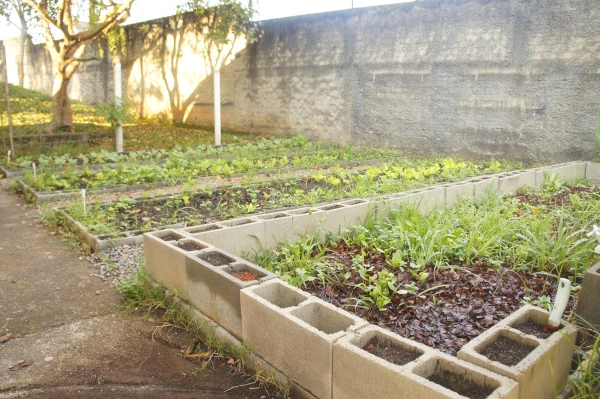
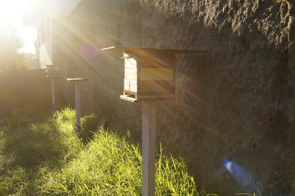

CLUBE LITLLE SCIENTISTS
De âmbito federal, pelo Programa Meninas na Ciência, o clube reúne meninas do ensino médio para desenvolver projetos do setor aeroespacial, com destaque para foguetes, e também atividades de Biologia.

Professora Marlene
Proposta do clube
De âmbito federal, pelo Programa Meninas na Ciência, o clube reúne meninas do ensino médio para desenvolver projetos do setor aeroespacial, com destaque para foguetes.
As atividades também contemplam projetos relacionados à Biologia, sempre com pesquisa, experimentação, registro e troca de ideias.
CLUBE LITLLE SCIENTISTS
De âmbito federal, pelo Programa Meninas na Ciência, o clube reúne meninas do ensino médio para desenvolver projetos do setor aeroespacial, com destaque para foguetes, e também atividades de Biologia.
Percurso de trabalho
Os projetos partem do setor aeroespacial, com foguetes, e também exploram temas de Biologia por meio de observação, construção, testes e apresentação dos resultados.
Registros do clube
As fotos mostram alguns espaços de cultivo e observação usados nas atividades do clube.
Além dos projetos do setor aeroespacial, com destaque para foguetes, o clube também desenvolve atividades relacionadas à Biologia.
Registro de uma atividade de cultivo e observação que integra as experiências práticas do clube.

Canteiro utilizado em atividades de cultivo, observação e registro.

Estrutura de apoio às atividades práticas de observação e investigação do clube.

Espaço de apoio para experiências de cultivo, observação e investigação.
Participação
O clube é destinado exclusivamente a meninas matriculadas no ensino médio.
O clube se reúne às quartas-feiras, das 13h15 às 15h30, no período da tarde.
Explore foguetes e outros temas do setor aeroespacial, além de projetos relacionados à Biologia.
Veja também o trabalho orientado pela professora Gabriele.